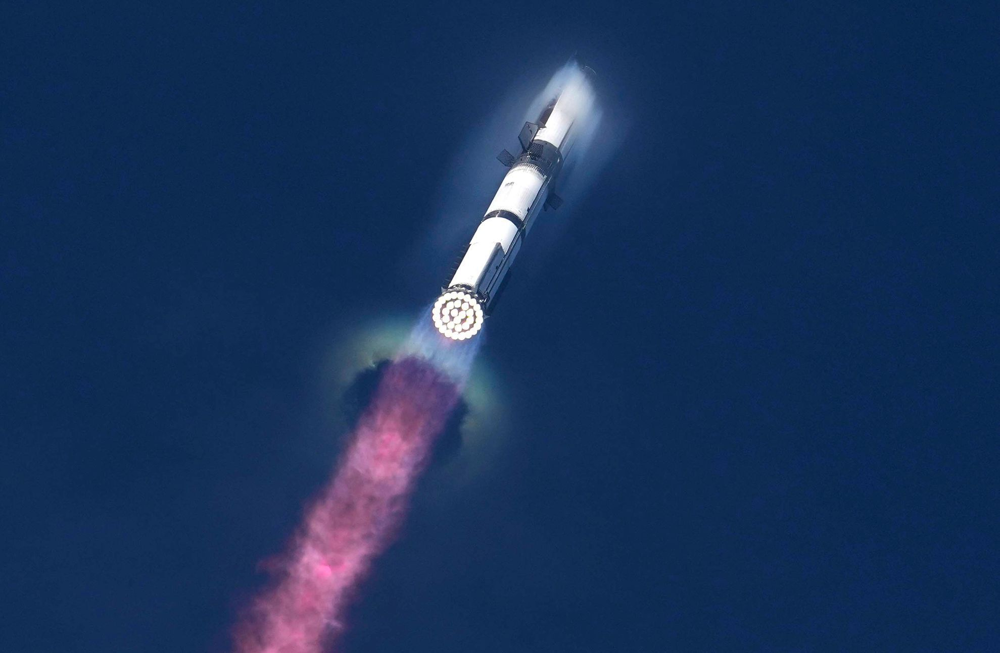
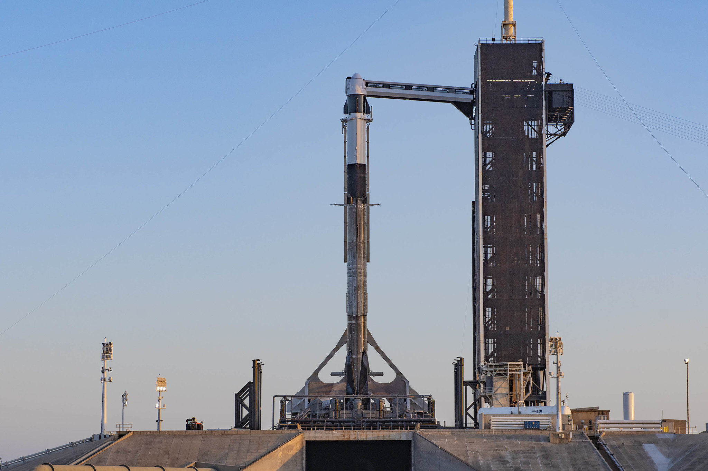
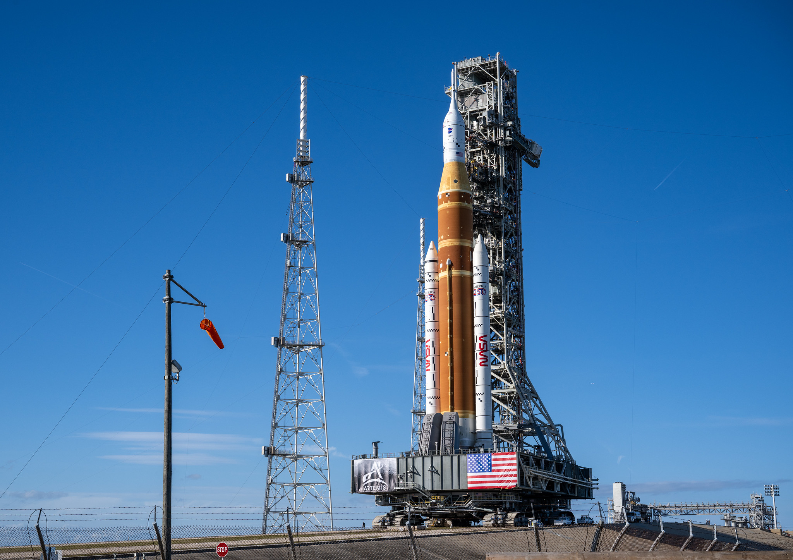
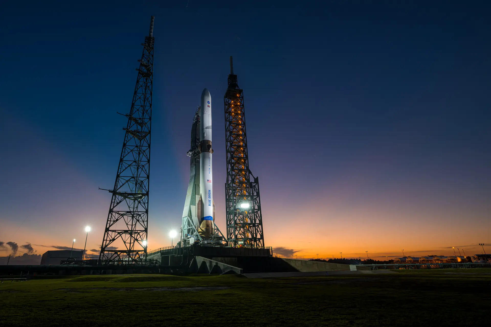
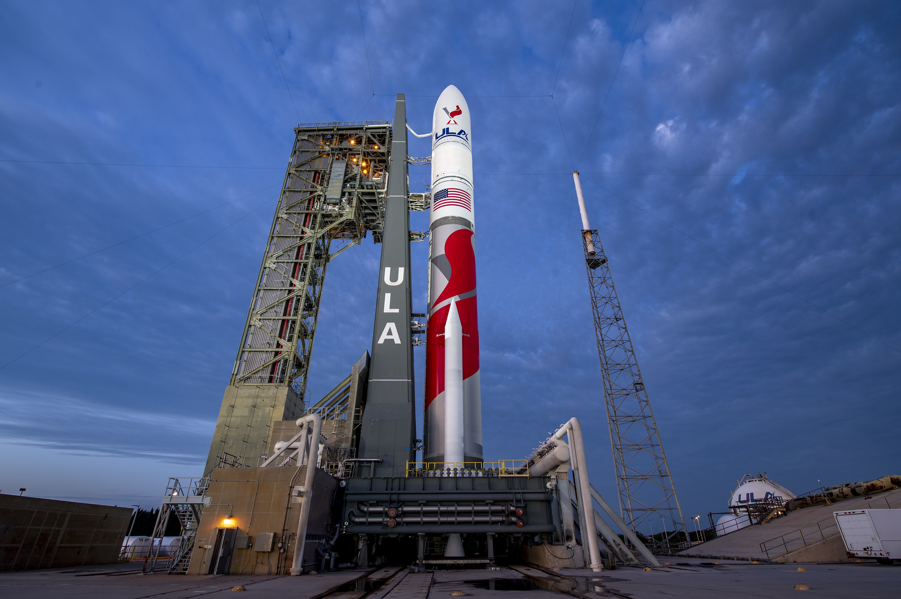
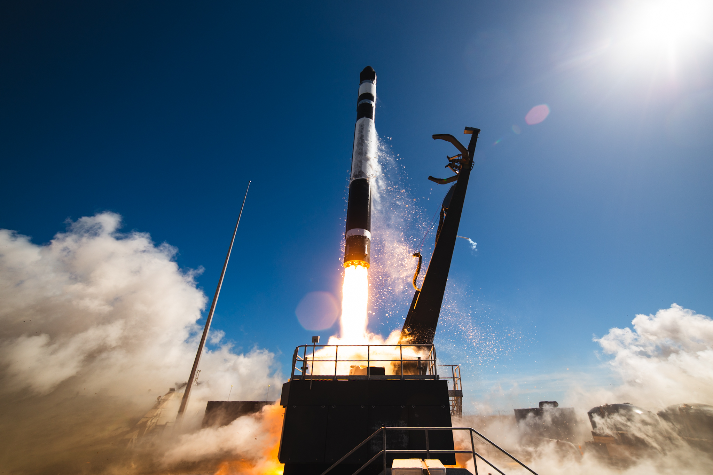

Starship
Starship je plně znovupoužitelná raketa, vyvíjená společností SpaceX.

Falcon 9
Falcon 9 je částečně použitelná raketa společnosti SpaceX. V současnosti je to nejpoužívanější raketa.

SLS
SLS je těžká nosná raketa navržená pro program Artemis, ve kterém se lidé vrátí na Měsíc.

New Glenn
New Glenn je částečně použitelná raketa společnosti Blue Origin, která teprve nedávno vstoupila do provozu.

Falcon Heavy
Falcon Heavy je silnější varianta rakety Falcon 9, po stranách má další dva první stupně.

Vulcan
Vulcan je nová raketa společnosti ULA, navržená hlavně pro náklady americké vlády.

Electron
Electron je malá raketa společnosti Rocket Lab. Je to v součnasnosti druhá nejpoužívanější raketa a slouží pro lehké náklady.